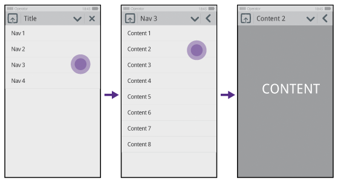
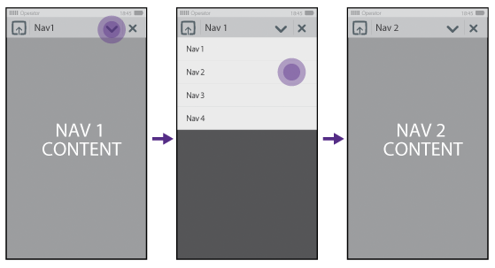
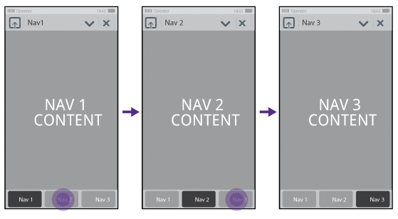

| Home · All Classes · Main Classes · Deprecated |
Applications can have different navigation patterns. There are three main templates available to suit the functional goals of your application.
This template is the most scalable option. Use the drill-down template when you need access to the entire application navigation structure on the top level. Layouts are not restricted to lists. The Close button is replaced with a Back button when the user drills down the structure.

Example of a drill-down navigation pattern
This template is intended for flat experiences, and prioritises content over navigation structure. Application menu is used for hopping between navigation options. There are many navigation options, as opposed to the tab bar template described in the following section. As all the navigation points work as the top level of the application, the Close button remains even after a navigation change.

Example of an application menu navigation pattern
This template is intended for quick access between distinct areas or modes. Be careful about mixing actions (like “Create New Message”) with navigation links in the tab bar. Use buttons within the content area for actions, if necessary, in this layout. This model is limited to a maximum of 4 navigation options. Navigation options in an application should not change over time.

| Copyright © 2010 Nokia Corporation | MeeGo Touch |